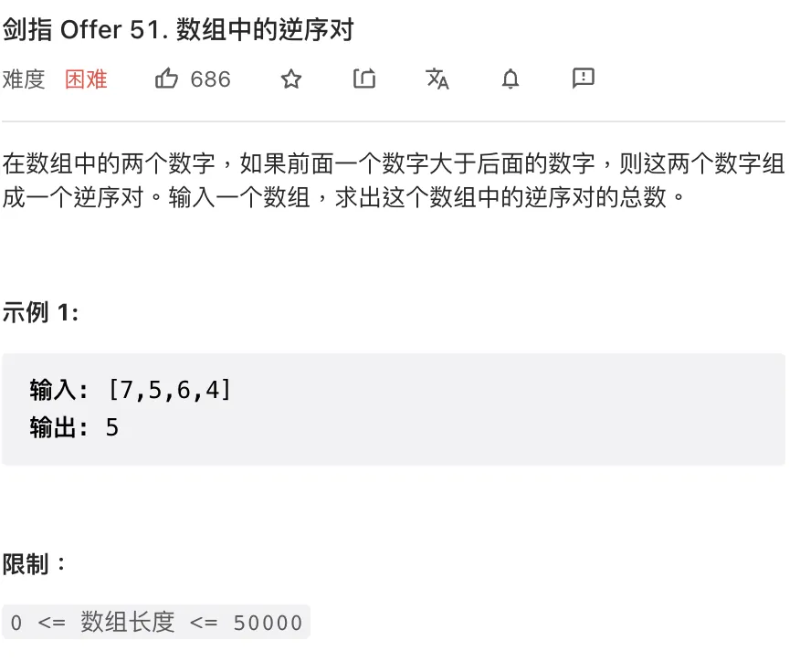
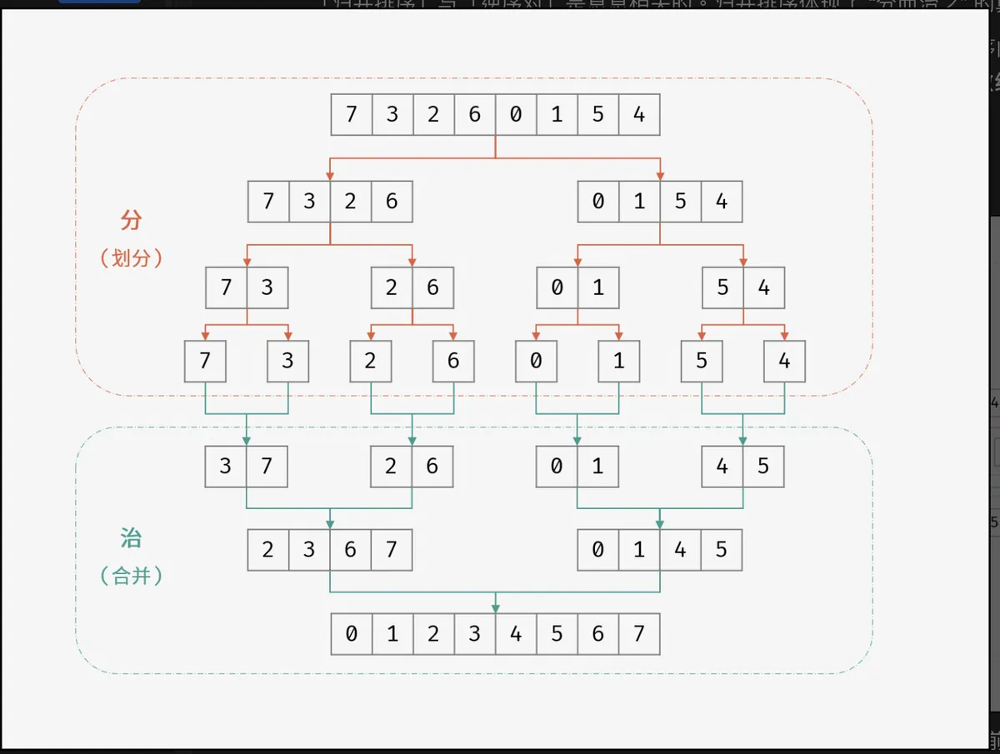

剑指 Offer 51. 数组中的逆序对
考過的公司：Bytedance
Question

✍🏽 My Solution
Solution #1 [王爭-MergeSort 加一行代碼]
执行用时：32 ms, 在所有 Java 提交中击败了58.09%的用户
内存消耗：48.6 MB, 在所有 Java 提交中击败了62.92%的用户
class Solution {
private int reverseCount = 0;
public int reversePairs(int[] nums) {
int n = nums.length;
mergeSort_r(nums, 0, n-1);
return reverseCount;
}
// 排序p~r的數組
private void mergeSort_r(int[] a, int p, int r) {
if (p >= r) return; // 終止條件
int q = p + (r - p)/2; // 找中間位置，因為害怕數組越界所以這樣寫，實際上等同(p+r)/2
mergeSort_r(a, p, q); // 排序前半段
mergeSort_r(a, q+1, r); // 排序後半段
// 將A[p...q]和A[q+1...r]合併為A[p...r]
merge(a, p, q, r);
}
// [p,q] [q+1,r]
private void merge(int[] a, int p, int q, int r) {
int i = p; // i 指向第一個數組起始
int j = q+1; // j 指向第二個數組起始
int k = 0; // tmp數組下標
int[] tmp = new int[r-p+1]; // 申請一個大小跟a[p...r]一樣的臨時數組
while (i <= q && j <= r) {
if (a[i] <= a[j]) {
tmp[k++] = a[i++];
} else {
reverseCount += (q-i+1); // 歸併排序加上這一行，計算逆序度下降了多少
tmp[k++] = a[j++];
}
}
// 剩餘數據放置於tmp後面
while (i <= q) {
tmp[k++] = a[i++];
}
while (j <= r) {
tmp[k++] = a[j++];
}
// 將tmp中的數組拷貝回a[p...r]
for (i = 0; i <= r-p; ++i) {
a[p+i] = tmp[i];
}
}
}
Explanation (in my words)
- How does their solution work?
- 故，題目要問：當前無序的數組，逆序度是多少？

- 故，題目要問：當前無序的數組，逆序度是多少？